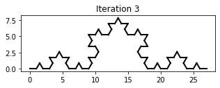
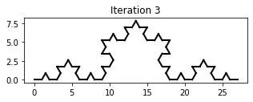

Workshop 2: Turtle Graphics
Contents
Workshop 2: Turtle Graphics#
Turtle Graphics is a graphical computer language often used to introduce programming to beginners. The user controls an on-screen turtle by sending commands such as ‘forward 50’ and ‘rotate 90’. The turtle follows the commands in sequence, drawing a line as it moves.

In this workshop, we will investigate a ‘Turtle Graphics’ program using Python, and use it to demonstrate some key programming concepts.
What you’ll learn
How to construct a Python program from a sequence of instructions
How to repeat sections of code using loops
How to assemble more complicated programs by combining instructions into functions
Question 1#
The code below implements a simple Turtle Graphics program. Don’t worry, you’re not expected to understand it - some of this is quite advanced!
Paste the code into a new code cell.
import matplotlib.pyplot as plt
import numpy as np
# Function definitions
def start():
state[0] = 0
state[1] = 0
state[2] = 0
fig = plt.figure(figsize=(4,4))
ax = fig.add_subplot(111)
ax.set_aspect('equal', adjustable='box')
def draw_forward(dis):
x = state[0]
y = state[1]
angle = state[2]
state[0] = x + np.cos(angle) * dis
state[1] = y + np.sin(angle) * dis
plt.plot([x, state[0]], [y, state[1]], color="black", linewidth=2)
def move_forward(dis):
x = state[0]
y = state[1]
angle = state[2]
state[0] = x + np.cos(angle) * dis
state[1] = y + np.sin(angle) * dis
def rotate_left(theta):
state[2] = state[2] + theta * np.pi / 180
state = [0, 0, 0]
If you run the code, nothing appears to happen. Create another code cell and paste the following code:
# Example: draw a unit square
start()
draw_forward(1)
rotate_left(90)
draw_forward(1)
If you run the code cell, you should see a backwards ‘L’ shape in a box, like above. Let’s examine each line of the five lines of code.
The first line begins with a
#symbol. This indicates that the line is a comment and will be ignored by Python.The next line initialises the Turtle and creates a plotting area.
We instruct the Turtle to move forward 1 unit.
We instruct the Turtle to turn left 90 degrees.
We instruct the Turtle to move forward 1 unit.
Notice that, even though we may not understand the entire Turtle program, we can understand how to use it to draw shapes.
Write more lines of code so that the Turtle draws a square (you can create a new code cell, or just edit the existing one).
A regular hexagon is a six-sided shape with equal side lengths and internal angles.
In a new code cell, write code to instruct the Turtle to draw a regular hexagon (you will need to choose a suitable rotation angle).
Computer Program
A computer program is an ordered sequence of instructions which direct the computer to perform a specific task. The computer executes each instruction in turn, resulting in the desired output.
Question 2#
In principle, we could use the same technique to generate any \(n\)-sided polygon. But there’s a smarter way, which means that we don’t have to endlessly repeat ourselves, using loops. Here is how to draw a square using a for loop:
start()
for i in range(4):
draw_forward(1)
rotate_left(90)
Rewrite your hexagon code using a
forloop.
for loop
A for loop instructs the computer to repeat a set of instructions a specified number of times. For example, the following code would print the numbers 0 to 9.
for i in range(10):
print(i)
Question 3#
The following code defines a function which draws a square, using the code above:
def draw_square():
for i in range(4):
draw_forward(1)
rotate_left(90)
Paste this code into the top code cell, immediately below where it says
# function definitions, then run the code cell.
In a new code cell, enter the code below and run it:
start()
draw_square()
Create new functions
draw_triangle(),draw_pentagon,draw_hexagonanddraw_heptagon. Create a new code cell and use the functions to reproduce the figure below. (use the functionmove_forwardto move the Turtle without drawing).
Functions
A function is a set of instructions combined together to achieve a specific outcome. Functions are a good alternative to having repeating blocks of code in a program.
Question 4#
Can you reproduce the figures below?
Hint: approximate a circle by a polygon with a large number of sides
Question 5 (Optional)#
The Koch curve is a fractal that can be generated by iteratively applying a sequence of Turtle instructions.

 

Use the Turtle to draw the first 3 iterations of the Koch curve, as above.
The Koch curve is just one example of a class of fractals called ‘L-Systems’.
Read about L-Systems then try drawing some L-Systems using Turtle.